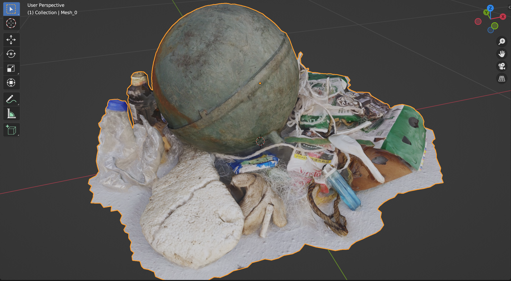

參與2022年《若水》藝術獎 ─ NFT 藝術創作徵件，活動引用老子道德經「上善若水，水善利萬物而不爭。」回應世界地球日與近期俄烏戰爭事件，主旨為和平與永續。

將基隆海岸拾取的海邊廢棄物進行反向掃描 / 螢幕截圖
作為數位創作者鮮少在創作的過程實際的與物理世界互動，此次創作嘗試以數位的型式紀錄藝術行動。2022年4月，於基隆海岸邊拾取的22樣海邊廢棄物，面對戰爭與和平永續我們能做的付出並不多，透過這項活動為身處的環境盡一份心，將實際的行動永存於區塊鏈。
 if water clean again. / 螢幕錄影
if water clean again. / 螢幕錄影